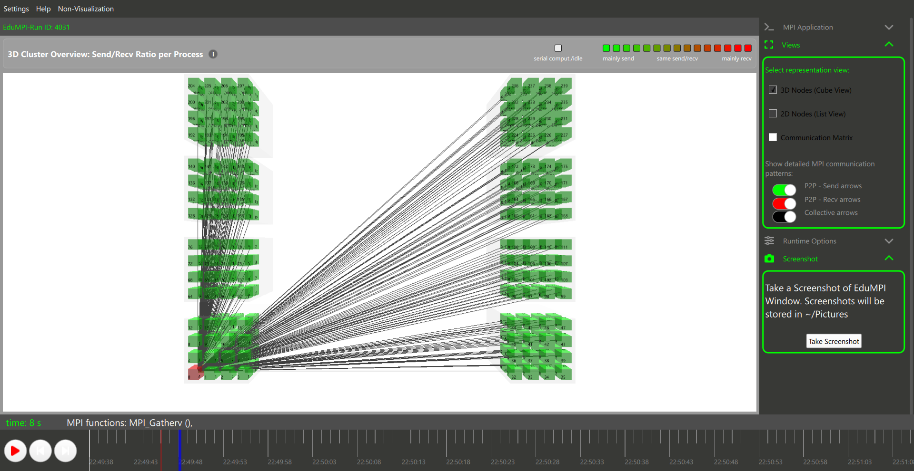

⚙️ Hierarchical Architecture Overview
1. 1D Row Decomposition
A strict SPMD approach where the Matrix A workload is statically sliced horizontally across completely independent parallel worker nodes.
2. The Core Hypothesis
HPC networks are volatile. I hypothesized that burning local CPU cycles to generate data would bypass cluster network bottlenecks completely.
3. Memory Management
Avoided pointer arrays. All matrices strictly use 1D Contiguous Allocation (malloc(rows * cols)) to prevent memory fragmentation.
4. Perfect Load Balancing
Used deterministic offsets to cleanly distribute remainder rows to lower ranks. Maximum imbalance between any two nodes is strictly 1 row.
5. Cache Optimization
Refactored the compute loop to an i-k-j order. This enables linear stride-1 fetching of Matrix B, maximizing L1/L2 cache hits.
6. Zero-Comm Trade-off
Achieved 0% network usage during setup by trading bandwidth for redundant O(N²) local PRNG generation of Matrix B on every node.
📊 EduMPI Visualizations

